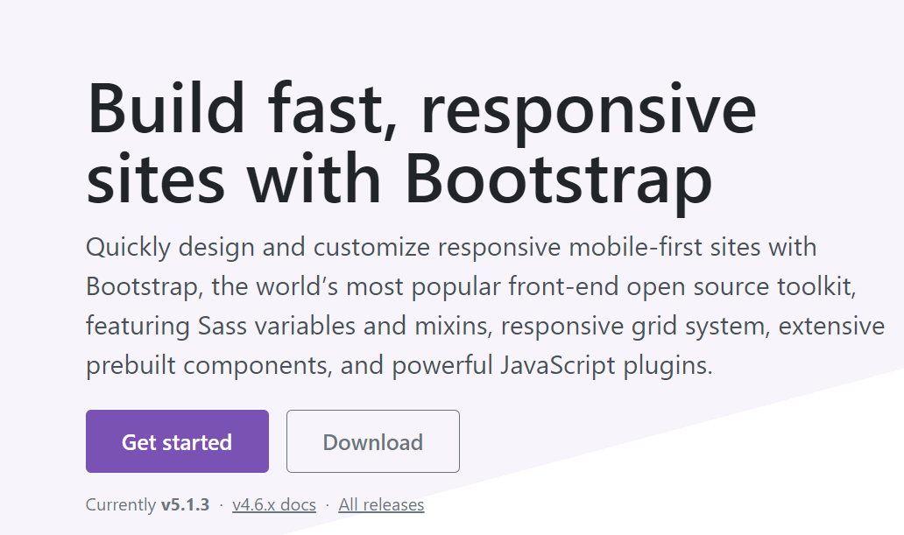

BOOTSTRAP GRID SYSTEM
DOWNLOADING THE LIBRARY AND ADDING THE HTML CODE
We need to download some libraries.
Follow the steps below.
Click here Then click the download button on the page that opens.

Download js and css files. Add the downloaded files into the HTML codes.
< !DOCTYPE html> < head> < meta chaarset="utf-8"> < tittle> BOOSTRAP GRİD SYSTEM < link rel="stylesheet" href="boostrap.min.css"> < link rel="stylesheet" href="boostrap.min.js"> < link rel="stylesheet" href="boostrap-grid.min.css"> < /head> < /html>
WHAT IS BOOSTRAP?
If we want to make a professional website, our site should work in harmony with all devices (desktop, laptop, tablet, phone, etc.).
The design structure suitable for all devices is calledresponsive design.
Responsive is the boostrap that provides us the greatest convenience when designing web.
Now, with the introduction of various mobile devices into our lives, it has become a must for websites to be compatible with all screen sizes.

RESPONSİVE NEDİR?
Responsive ekrana duyarlı demektir. Yani bilgisayarda görünen görünümü elinizde tuttuğunuz telefonun eran boyutuna göre görünümü değiştirir.
.png)
BOOSTRAP'IN 12'LİK GRİD YAPISI
Boostrap,web sayfalarını yatay olarak 12 eşit parçaya bölmüş olarak ele alır.Her bir grid 8.3%
genişlik değerine sahip şekilde hazırlanır.Önyüz geliştiricisi de sadece class tanımlayarak tüm yapıyı hiç
olmadığı
kadar hızlı ve kolay bir şekilde düzenleyebilir.

BOOSTRAP GRİD SİSTEMİ
Grid yapısı sitenizin iskelet yapısını oluşturmak konusunda size hız katıyor. Ancak en büyük yenilik bu değil. Izgara yapısı sayesinde web sayfanızın responsive (duyarlı) hale bürünmesini sağlayabilirsiniz.
Nasıl mı? Acele etmeyin, öncesinde öğrenmemiz gereken birkaç özellik daha var.
Bootstrap’in grid yapısı her türden taşınabilir cihaza uygun tasarımlar oluşturmanızı sağlıyor. Bunları kendi içinde extra small(xs),small medium(sm), medium(md) ve large(lg) devices olarak sıralıyor.
İleride bu özellikleri ayrıntılı şekilde açıklayacağım.
En temeliyle başlıyoruz. Arkanıza yaslanın ve rahatlayın.

Yukarıdaki col-md-6 tanımlaması, medium (orta) boyutlardaki cihazlarda, ekranın 12’de 6’sını (yarısını) kaplayacak şekilde pozisyon alır. 12 tane grid olduğunu söylemiştik, burada 6 tanesini belirttik. Dolayısıyla bir div’e bu classı verdiğimizde öğe kendiliğinden %50 (6/12 grid) width değerini alacaktır.
Hemen ek bilgi vereyim size Medium boyutlardaki cihazlar 992 pikselden büyük ekran genişliklerine sahiptir.
Sizlere bazı kavramlar hakkında kısa bir açıklama yaptıktan sonra özelliklere ve örneklere geçeceğim.
OFFSET VE PUSH KAVRAMLARI NEDİR?
Her iki tanım da ilgili elemanı dış kısmından ittirmenizi sağlar. Margin gibi düşünün. Margin değerini 50 piksel yaptığınız bir resim nasıl diğer öğelerden 50 piksel uzaklaşıyorsa da offset ve push tanımları da bu işi yapıyor.
RESPONSİVE NE DEMEK?
Responsive ekrana duyarlı demektir. Yani bilgisayarda görünen görünümü elinizde tuttuğunuz telefonun eran boyutuna göre görünümü değiştirir.
BOOSTRAP'DA CONTAİNER SINIFI
Bootstrap içerisinde içerik kısımlarının bulunduğu ana div yapısını oluşturan bir sınıf oluşturulmuştur.Bu“container”sınıfıdır
ve bu sınıf kullanılarak
ana div daha başarılı bir şekilde boyutlandırılır.
Container sınıfı 2 çeşittir. 1.si sadece container; sayfanın ortasını alır 1170px genişliğindedir,
2.si container -fluid sayfanın tamamını genişlik olarak alır.
Grid sistemi classları da bu container classları içerisinde kullanılarak tasarımlar
sorunsuz oluşturulmaktadır.Ekran çözünürlüklerine göre grid sınıflarını ve container
boyutlarını gösteren görseli inceleyerek başlayalım.

Yukarıda gösterildiği gibi, responsive bir tasarım yapabilmek için her cihaz ölçüsüne uygun bir kod yazılması gerekmektedir.
Bu sayede tüm cihazlarda stabil çalışan bir tasarım elde edebiliriz.
Bootstrap içerisinde verilen içerik alanı öncelikle satıra daha sonra da sütunlara ayrılarak gridler oluşturulmaktadır.
div tagına row class’ı vererek bir satır açarız ve artık bu satır içerisinde kolonlarımızı oluşturabiliriz.
Her satır 12 parçaya ayrılmıştır.Burada bize kullanıma sunulmuş olan sınıflar her 1 sutun boyutuyla kullanılabileceği gibi 2,3,4,5…12 li parça şeklinde de kullanılabilir.
.container ile responsive olarak yani tarayıcı genişliğine göre .container class' ı sayfamızın alacağı sabit genişliği belirler. Bunu hemen
örnek ile pekiştirmenizi istiyorum.
< !DOCTYPE html>
< div class="container">
< /div>
< /html>
Burası ise CSS kısmıdır.
.container{
height:100px;
background-color:blue;
}
 Bu görsel tarayıcının boyutu tam ekrandadır.
Bu görsel tarayıcının boyutu tam ekrandadır.
Burası HTML kısmıdır.
< !DOCTYPE html>
< div class="container-fluid">
< /div>
< /html>
Bu kısım ise CSS kısmıdır.
.container-fluid{
height:100px;
background-color:blue;
}
 Bu görsel ise tarayıcının küçük ekrandaki görünümüdür.Umarım farkı anlamışsınızdır.
Bu görsel ise tarayıcının küçük ekrandaki görünümüdür.Umarım farkı anlamışsınızdır.
BOOSTRAP-4 GRİD SİSTEMİ ÖZELLİKLERİ
Grid sistemin en büyük avantajı responsive bir yapıya sahip olmasıdır
yani tarayıcı genişliğine göre her bir kolonu yan yana ya da alt alta alabiliriz.
@media query' ler ile tarayıcının o anki genişliğini alabiliyoruz ve aldığımız bu değerlere göre etiketlerini yani bootstrap açısından baktığımızda oluşturduğumuz her kolonu alt alta ya da yan yana alabiliriz.
Eğer ki satırda yer varsa yan yana eğer satırda yer kalmadıysa alt satıra alabiliyoruz ki; masaüstü bilgisayarda
açılan bir sitenin görünümü yatayda yer kaplarken mobile bir cihazda açılan site tasarımındaki her kolonun
alt alta gelmesi daha bir görünüm sağlayacaktır.
Boostrap aşağıdaki media query değerlerini kullanmaktadır.
//Küçük Cihazlarda (576px ve yukarısı)
@media (min-width: 576px) { ... }
//Orta Boy Cihazlarda (tablet, 768px ve yukarısı)
@media (min-width: 768px) { ... }
//Büyük Cihazlarda (Masaüstü Bilgisayarlar, 992px ve yukarısı)
@media (min-width: 992px) { ... }
//Ekstra Büyük Cihazlarda (Büyük Masaüstü Bilgisayarlar, 1200px ve yukarısı)
@media (min-width: 1200px) { ... }
Yani tarayıcı genişliği;
--576px ve aşağısında mı (.xs)
--minimum 576px ve 768px aralığında mı (.sm)
--minimum 768px ve 992px aralığında mı (md)
--minimum 992px ve 1200px aralığında mı (lg)
--ya da 1200px ve üstünde mi (xl)
Ek bir bilgi vermek istiyorum size .xs sınıfı bootstrap 4 'de kullanılmamaktadır.
media query kullanarak sayısal değerlerle uğraşmak yerine bootstrap 4 ile belirlenen ve her bir sayısal değere karşılık gelen class isimlerini kullanmak çok daha kolaydır.
Bu class isimleri .xs (ekstra small), .sm (small), .md (medium), .lg (large) ve .xl (eksra large) sınıflarıdır.
VİSİBLE VE HİDDEN
Boostrap kullanırken display tanımları yapmakla da uğraşmıyoruz.Öğelerinizin her türlü tasarımda
görünüklük derecelerini sadece bir class ile yönetebiliyoruz.
Aşağıda vereceğim tanımları visible ve hiddenolarak
ayırdım.Normal haliyle verilmiş bir visible tanımı öğeyi her türden cihazda görünür kılar.
Hidden ise onu gizler.
Gelin şimdi detaylı şekilde öğrenelim.
visible-lg:Sadece large ekran genişliklerinde gözükür.
visible-md: Sadece medium ekran genişliklerinde gözükür.
visible-sm: Sadece small medium ekran genişliklerinde görünür.
visible-xs: Sadece extra small ekran genişliklerinde görünür.
hidden-lg: Sadece large ekran genişliklerinde gizlenir.
hidden-md: Sadece medium ekran genişliklerinde gizlenir.
hidden-sm: Sadece small ekran genişliklerinde gizlenir.
hidden-xs: Sadece extra small ekran genişliklerinde gizlennir.
Tabi bu yapıları çoklu şekilde kullanabilirsiniz.Örneğin;
< div class="visible-lg hidden-md visible-sm hidden-xs">< /div>
Yukarıda ekran genişliği large ve small medium da gözüksün fakat medium ve extra small da gözükmesin dike
belirtmiş olduk.
BOOSTRAP-4 GRİD SİSTEMİ ÖRNEKLERİ
Şimdi ilk örneeğimizi sizlere açıklayacağım ve sonrasında da nasıl göründüğüne bakacağız.
Yan yana 4 farklı sütun oluşturacağız.Tarayıcı boyutu en büyükteyken yan yana olacak şekilde görünür.
Eğer tarayıcı boyutunu en küçük boyuta aldığımızda ise oluşturduğumuz 4 sütun altalta gelecek şekilde yeni görünüm elde ederiz.
Şimdi HTML ve CSS kodlarını size gösterdikten sonra alt kısımda ise nasıl göründüğünü gösteren fotoğrafı yerleştireceğim.
< div class="container">
< div class="row">
< div class="col-sm-3 bg-primary">.col-sm-3< /div>
< div class="col-sm-3 bg-danger">.col-sm-3< /div>
< div class="col-sm-3 bg-primary">.col-sm-3< /div>
< div class="col-sm-3 bg-danger">.col-sm-3< /div>
< /div>
< /div>
Bu kısım ise CSS kısmıdır.
.row{
height:50px;
}

Tarayıcı boyutu tam ekrandayken görünüm böyledir.

Bu görünüm ise tarayıcı boyutu en küçük boyuttayken elde ettiğimiz görüntüdür.Umarım anlatımım öğrenmenize yardımcı oluyordur.
Yukarıda verdiğim örnekteki 4 sütunun boyutları birbirine eşitti. Şimdi vereceğim örnekte 2 sütun olacak.
Fakat ikinci sütunumuz birinci sütunumuzdan büyük olacak.Tarayıcı boyutlarını değiştirdiğimizde nasıl bir görünüm oluşur??
Siz düşüne dururken ben alta HTML ve CSS kodlarını yazıp nasıl göründüklerini göstereceğim.Sonrasındabirlikte yorumlayalım.
< div class="container">
< div class="row">
< div class="col-md-3 bg-primary">.col-md-3< /div>
< div class="col-md-9 bg-danger">.col-md-3< /div>
< /div>
< /div>
Bu kısım ise CSS kısmıdır.
.container-fluid{
height:100px;
background-color:blue;
}

Tarayıcı boyutu tam ekrandayken dediğim gibi ikinci sütun birinci sütundan daha büyük.Haydi şimdi tarayıcı boyutunu en küçük boyut
yaptığımızda nasıl bir şey ile karşılaşacağız.

Evvet umarım tahmin ettiğiniz görüntü bu görüntüdür.Sütun boyutları demek ki tarayıcı boyutunu en küçük yaptığımızda boyutlarını birbirine
eşit şekilde alt alta yerleştiriyor.
TEŞEKKÜRLER
Buraya kadar okuduğunuz için teşekkürler.Umarım anlatımım size yardımcı olmuştur.Elimden geldiğince ayrıntılı anlattım.Soru ve önerileriniz
için aşağıda ki kişisel bilgilerimden ulaşabilirsiniz.